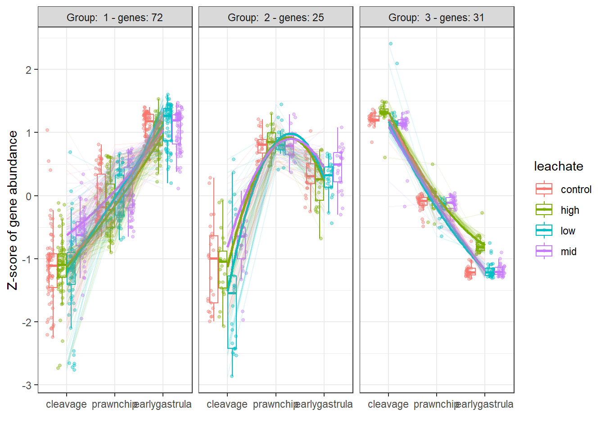
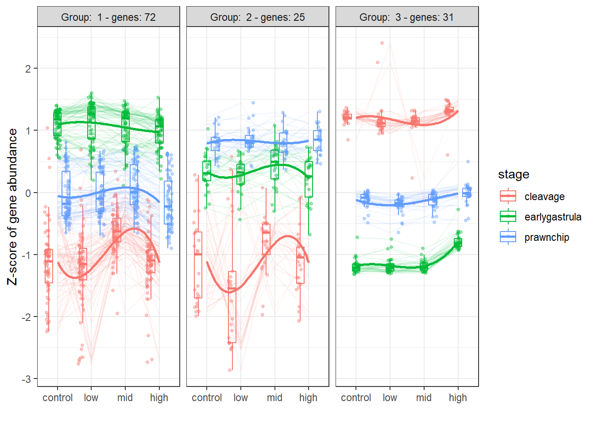
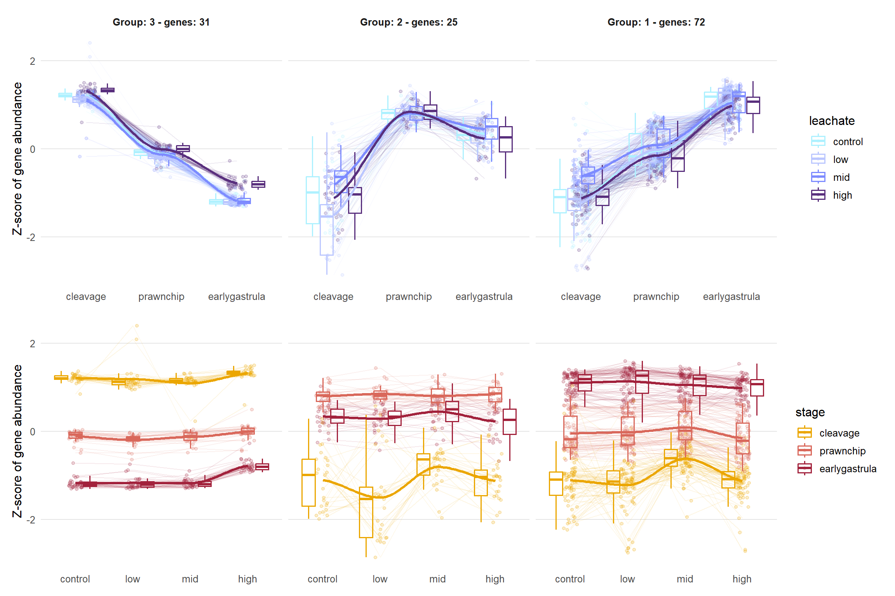
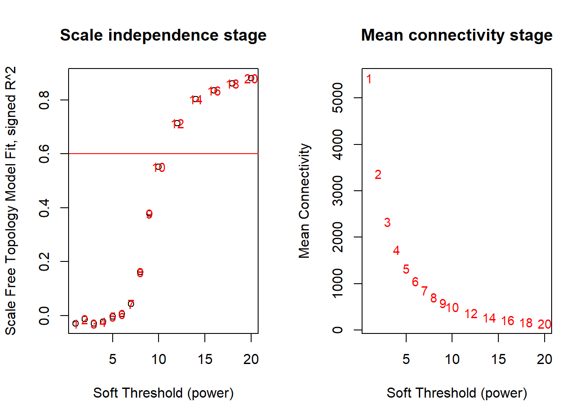
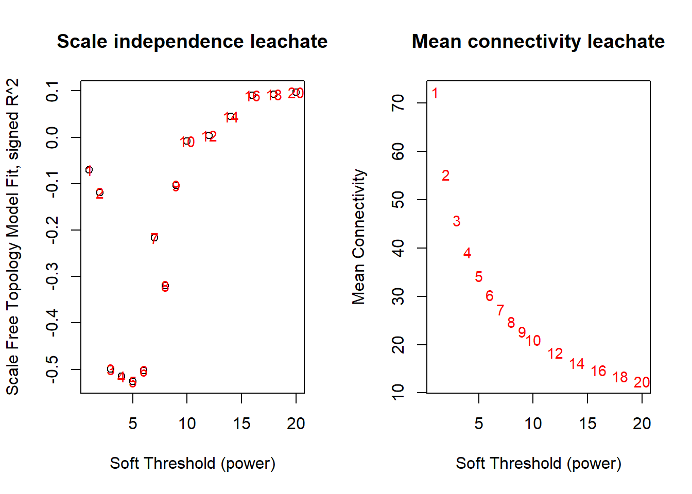
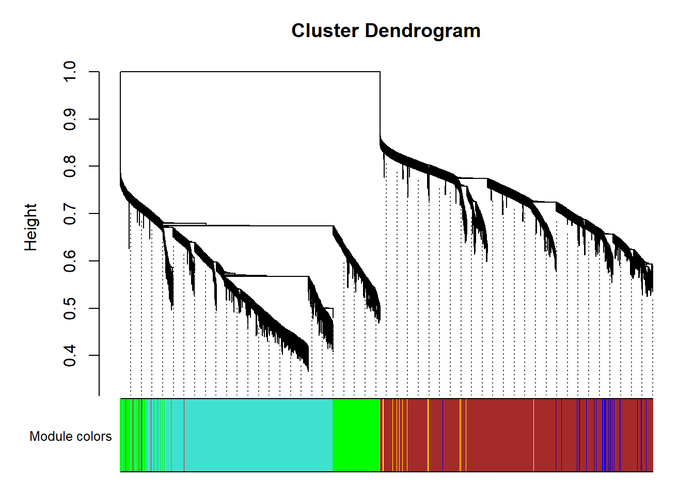
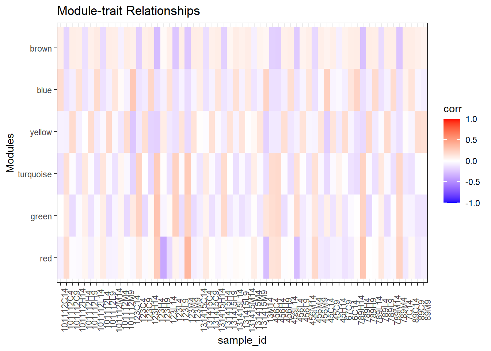
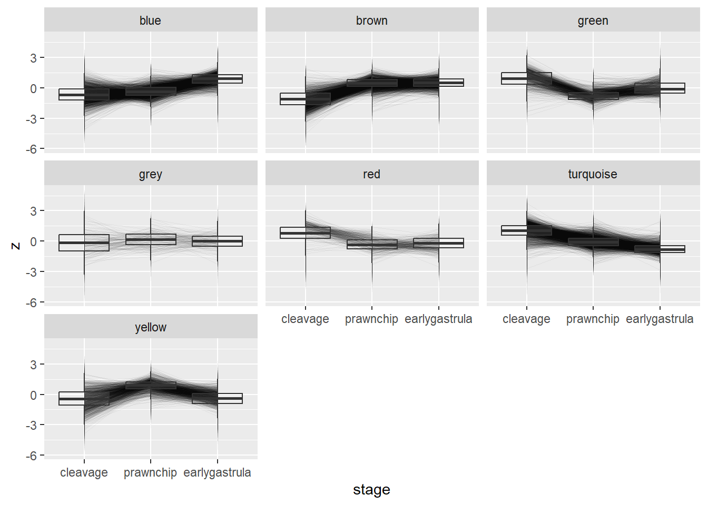
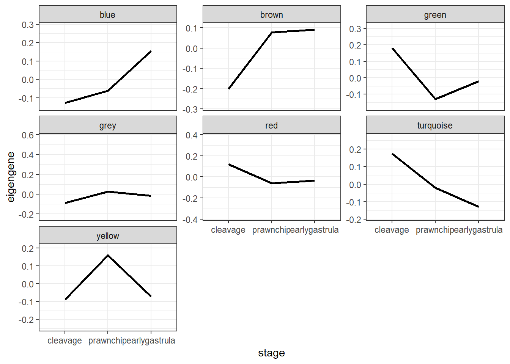

library(tidyverse)
library(DEGreport)
library(patchwork)Group DEGs by Expression Pattern
Using DEGreport and WGCNA
1 Load Libraries
Install WGCNA & package dependencies
Note
If you have not installed WGCNA before, you may need to install some dependencies first. Uncomment and run the code chunk below to install them, and then install WGCNA.
#install.packages(c("fields", "dynamicTreeCut", "qvalue", "flashClust", "Hmisc") )
#BiocManager::install("impute", ask = FALSE, update = FALSE)
#install.packages("WGCNA")library(WGCNA)
enableWGCNAThreads(nThreads = 8)Allowing parallel execution with up to 8 working processes.2 Inputs
output_path <- "../../output/06_deg/cluster/"
metadata_path <- "../../metadata/metadata_or.csv"# Load metadata (outlier samples removed, 61 samples remain)
metadata_or <- read_csv(metadata_path)
# set factors
metadata_or <- metadata_or %>%
mutate(
collection_date = as.Date(collection_date, format = "%d-%b-%Y"),
stage = factor(stage, levels = c("cleavage", "prawnchip", "earlygastrula")),
leachate = factor(leachate, levels = c("control", "low", "mid", "high")),
spawn_night = factor(spawn_night, levels = c("July_6th", "July_7th", "July_8th"))
)
# View metadata structure
str(metadata_or)tibble [61 × 9] (S3: tbl_df/tbl/data.frame)
$ sample_id : chr [1:61] "101112C14" "101112C4" "101112C9" "101112H14" ...
$ collection_date: Date[1:61], format: "2024-07-08" "2024-07-08" ...
$ parents : num [1:61] 101112 101112 101112 101112 101112 ...
$ group : chr [1:61] "C14" "C4" "C9" "H14" ...
$ hpf : num [1:61] 14 4 9 14 4 9 14 4 9 14 ...
$ stage : Factor w/ 3 levels "cleavage","prawnchip",..: 3 1 2 3 1 2 3 1 2 3 ...
$ leachate : Factor w/ 4 levels "control","low",..: 1 1 1 4 4 4 2 2 2 3 ...
$ leachate_mgL : num [1:61] 0 0 0 1 1 1 0.01 0.01 0.01 0.1 ...
$ spawn_night : Factor w/ 3 levels "July_6th","July_7th",..: 3 3 3 3 3 3 3 3 3 3 ...# Load VST normalized gene count matrices for leachate and stage DEGs
vst_mat_130_df <- read_csv("../../output/06_deg/spawnnight/vst_mat_130_df.csv")
vst_mat_stage_df <- read_csv("../../output/06_deg/spawnnight/vst_mat_stage_df.csv")3 DEGreport Clustering
Detect Patterns of Expression see Roberts Lab Issue #1916
Perform clustering. You’ll need:
- a metadata matrix with sample_id as rows
meta_mat <- metadata_or %>%
column_to_rownames(var = "sample_id")
head(meta_mat)| collection_date | parents | group | hpf | stage | leachate | leachate_mgL | spawn_night | |
|---|---|---|---|---|---|---|---|---|
| 101112C14 | 2024-07-08 | 101112 | C14 | 14 | earlygastrula | control | 0 | July_8th |
| 101112C4 | 2024-07-08 | 101112 | C4 | 4 | cleavage | control | 0 | July_8th |
| 101112C9 | 2024-07-08 | 101112 | C9 | 9 | prawnchip | control | 0 | July_8th |
| 101112H14 | 2024-07-08 | 101112 | H14 | 14 | earlygastrula | high | 1 | July_8th |
| 101112H4 | 2024-07-08 | 101112 | H4 | 4 | cleavage | high | 1 | July_8th |
| 101112H9 | 2024-07-08 | 101112 | H9 | 9 | prawnchip | high | 1 | July_8th |
- a gene count matrix that has been variance stabilized and filtered to your significant genes of interest with genes in rows and sample ID in columns
vst_mat_130 <- vst_mat_130_df %>%
column_to_rownames(var = "gene_id") %>%
as.matrix()
dim(vst_mat_130)[1] 130 61vst_mat_130[1:6,1:6] 101112C14 101112C4 101112C9
Montipora_capitata_HIv3___TS.g28558.t3a 9.372147 8.840657 9.285092
Montipora_capitata_HIv3___TS.g9507.t1 7.238926 6.451824 7.263696
Montipora_capitata_HIv3___TS.g9699.t2 8.223187 6.743106 6.686902
Montipora_capitata_HIv3___RNAseq.g40764.t1 8.257760 7.033599 6.625200
Montipora_capitata_HIv3___TS.g48661.t1 7.881448 6.371478 8.249059
Montipora_capitata_HIv3___TS.g45793.t1b 7.563914 7.599192 7.905338
101112H14 101112H4 101112H9
Montipora_capitata_HIv3___TS.g28558.t3a 9.543859 8.982906 9.237886
Montipora_capitata_HIv3___TS.g9507.t1 6.852210 7.273093 7.430226
Montipora_capitata_HIv3___TS.g9699.t2 8.109286 6.966543 6.843566
Montipora_capitata_HIv3___RNAseq.g40764.t1 8.569245 6.495544 6.667523
Montipora_capitata_HIv3___TS.g48661.t1 7.913970 7.118086 8.194370
Montipora_capitata_HIv3___TS.g45793.t1b 7.287801 6.911107 7.870739vst_mat_stage <- vst_mat_stage_df %>%
column_to_rownames(var = "gene_id") %>%
as.matrix()
dim(vst_mat_stage)[1] 10793 61vst_mat_stage[1:6,1:6] 101112C14 101112C4 101112C9
Montipora_capitata_HIv3___RNAseq.g4581.t1 7.594797 9.759822 8.479357
Montipora_capitata_HIv3___RNAseq.g4583.t1 10.456419 10.669007 10.411524
Montipora_capitata_HIv3___RNAseq.g4584.t1 10.806204 9.742696 9.163124
Montipora_capitata_HIv3___RNAseq.g4585.t1 8.718631 6.624745 7.575180
Montipora_capitata_HIv3___RNAseq.g4589.t1 7.810013 7.246678 8.355120
Montipora_capitata_HIv3___RNAseq.g4591.t1b 11.584167 7.380851 8.669597
101112H14 101112H4 101112H9
Montipora_capitata_HIv3___RNAseq.g4581.t1 7.814438 8.563593 8.334495
Montipora_capitata_HIv3___RNAseq.g4583.t1 10.501690 10.975711 10.558306
Montipora_capitata_HIv3___RNAseq.g4584.t1 10.552161 9.296774 8.998308
Montipora_capitata_HIv3___RNAseq.g4585.t1 8.266095 7.164475 7.950995
Montipora_capitata_HIv3___RNAseq.g4589.t1 8.002365 7.333873 8.447536
Montipora_capitata_HIv3___RNAseq.g4591.t1b 11.031153 7.534321 9.0532833.1 Leachate DEGs
Run with minimum 10 genes per cluster to detect because we have few DEGs.
- DEGreport vignette, degPatterns
# Use the `degPatterns` function from the 'DEGreport' package to show gene clusters across developmental stage
leachate130_GEPs <- degPatterns(vst_mat_130, metadata = meta_mat, time = "stage", col= "leachate", plot=TRUE, minc = 10)
ggsave(filename="../../output/06_deg/cluster/DEG_LeachateClusterPatterns_bystage_plot.png", width=12, height=10)# Use the `degPatterns` function from the 'DEGreport' package to show gene clusters across leachate dose
degPatterns(vst_mat_130, metadata = meta_mat, time = "leachate", col="stage", plot=TRUE, minc = 10)
ggsave(filename="../../output/06_deg/cluster/DEG_LeachateClusterPatterns_bydose_plot.png", width=12, height=10)3.1.1 Save leachate DEG clusters
# Rename and extract information
leachate130_GEP_df <- leachate130_GEPs$df %>%
rename(gene_id=genes)write_csv(leachate130_GEP_df, file.path("../../output/06_deg/cluster/leachate_DEG_GEP.csv"))*GEP: gene expression pattern
3.1.2 Extract z scores
Dataframe values are Z score of VST normalized gene counts
leachate_cluster_z <- leachate130_GEPs[["normalized"]]
leachate_cluster_z <- as.data.frame(leachate_cluster_z) %>%
select(1:12) %>%
rename(zscore = value)Save dataframe of zscores and cluster for each DEG across each stageXdose
write_csv(leachate_cluster_z, "../../output/06_deg/cluster/leachate_cluster_zscores.csv")Extract the list of genes in each cluster.
The genes that have high relative transcript abundance in the earlygastrula stage group in group 1, high relative transcript abundance in prawnchip are group 2, and high relative abundance in cleavage are group 3. There is a general trend of more transcripts present as development progresses… which makes sense because the embryo as it grows is doing more. The subtle leachate effects we do see (non monotonic patterns in cleavage in group 1 and 2, slight increase under high pvc leachate exposure in early gastrula in group 3) appear to impact the transcript abundances of the stage with the lowest abundances of those genes… so the lower the gene abundance the more effect leachate has on those genes? Is that just an artifact of increased variability at lower transcript abundance?
3.1.3 Plot leachate DEG clusters
Set color scheme
leachate.colors <- c(control = "#AEF1FF",
low = "#BBC7FF",
mid = "#7D8BFF",
high = "#592F7D")
stage.colors <- c(cleavage = "#EBA600",
prawnchip = "#D9685B",
earlygastrula = "#A2223C")Wrangle and label
# reverse gene cluster order to plot from cleavage to eg
leachate_cluster_zordered <- leachate_cluster_z %>%
mutate(cluster = factor(cluster, levels = rev(sort(unique(cluster)))))
facet_labs <- leachate_cluster_zordered %>%
summarise(n_genes = n_distinct(genes), .by = cluster) %>% # counts unique genes per cluster
mutate(lab = sprintf("Group: %s - genes: %d", cluster, n_genes)) %>%
dplyr::select(cluster, lab) %>%
deframe() # named vector: names = cluster, values = labPlot and patch
# leachate as x plot
pl <- ggplot(leachate_cluster_zordered %>%
mutate(leachate = factor(leachate, levels = c("control","low","mid","high"))),
aes(x = leachate, y = zscore, color = stage)) +
geom_line(aes(group = interaction(genes, stage)), alpha = 0.1, linewidth = 0.4) + # per-gene(thin & transparent)
geom_point(position = position_jitter(width = 0.12, height = 0), alpha = 0.2, size = 1.2) +
geom_boxplot(alpha = 0.10, outlier.shape = NA) +
geom_smooth(aes(group = stage), se = FALSE) + # trend
facet_wrap(~ cluster, nrow = 1) +
labs(x = NULL, y = "Z-score of gene abundance", color = "stage") +
theme_minimal(base_size = 12) +
scale_color_manual(values = stage.colors)+
scale_y_continuous(breaks = function(x) pretty(x, n = 3)) +
theme(panel.grid = element_blank(),
panel.grid.major.y = element_line(color = "grey80", linewidth = 0.3), # keep major horizontal
panel.grid.minor.y = element_blank(), # drop minor horizontal
panel.grid.major.x = element_blank(), # drop vertical
panel.grid.minor.x = element_blank(),
strip.text = element_blank(),
strip.background = element_blank())
# stage as x plot
ps <- ggplot(leachate_cluster_zordered %>%
mutate(leachate = factor(leachate, levels = c("control","low","mid","high")),
stage = factor(stage, levels = c("cleavage", "prawnchip", "earlygastrula"))),
aes(x = stage, y = zscore, color = leachate)) +
geom_line(aes(group = interaction(genes, leachate)), alpha = 0.1, linewidth = 0.4) + # per-gene(thin & transparent)
geom_point(position = position_jitter(width = 0.12, height = 0), alpha = 0.2, size = 1.2) +
geom_boxplot(alpha = 0.10, outlier.shape = NA) +
geom_smooth(aes(group = leachate), se = FALSE) + #trend pattern
facet_wrap(~ cluster, nrow = 1, labeller = labeller(cluster = facet_labs)) +
labs(x = NULL, y = "Z-score of gene abundance", color = "leachate") +
theme_minimal(base_size = 12) +
scale_color_manual(values = leachate.colors)+
scale_y_continuous(breaks = function(x) pretty(x, n = 3)) +
theme(panel.grid = element_blank(),
panel.grid.major.y = element_line(color = "grey80", linewidth = 0.3), # keep major horizontal
panel.grid.minor.y = element_blank(), # drop minor horizontal
panel.grid.major.x = element_blank(), # drop vertical
panel.grid.minor.x = element_blank(),
strip.text = element_text(face = "bold"))
# combine with patchwork
pc <- ps / pl
pc
Save plots as pngs
ggsave("../../output/06_deg/cluster/leachate_bystage_clusters.png", plot = pl, width=18, height=6 , dpi=600)
ggsave("../../output/06_deg/cluster/leachate_bydose_clusters.png", plot = ps, width=18, height=6 , dpi=600)
ggsave("../../output/06_deg/cluster/leachate_combo_clusters.png", plot = pc, width=18, height=12 , dpi=600)3.2 Stage DEGs clustering
# Use the `degPatterns` function from the 'DEGreport' package
#stage_GEPbystage <- degPatterns(
# vst_mat_stage,
# metadata = meta_mat,
# time = "stage",
# plot = FALSE,
# minc = 10)
Note
STUCK! WGCNA blockwiseModules (network clustering, handles 10k+ well)
If you want modules that behave like coexpression “communities” (often great for GO enrichment), WGCNA’s blockwise workflow is designed to scale and can use multiple threads.
4 WGCNA
Note
Note that here we are starting with a subset of genes that have already been normalized using a variance stabilizing transformation and are differentially expressed.
Transpose VST count matrix such that rows are samples and columns are genes
vst_t_stage <- t(vst_mat_stage) # WGCNA expects samples x genes
vst_t_leachate <- t(vst_mat_130)Examine the dataframe structure to confirm that rows are samples and columns are genes and values are VST normalized counts
vst_t_stage %>%
as.data.frame() %>%
dplyr::select(1:3) %>%
head() %>%
knitr::kable()| Montipora_capitata_HIv3___RNAseq.g4581.t1 | Montipora_capitata_HIv3___RNAseq.g4583.t1 | Montipora_capitata_HIv3___RNAseq.g4584.t1 | |
|---|---|---|---|
| 101112C14 | 7.594797 | 10.45642 | 10.806204 |
| 101112C4 | 9.759822 | 10.66901 | 9.742696 |
| 101112C9 | 8.479357 | 10.41152 | 9.163124 |
| 101112H14 | 7.814438 | 10.50169 | 10.552161 |
| 101112H4 | 8.563593 | 10.97571 | 9.296774 |
| 101112H9 | 8.334495 | 10.55831 | 8.998308 |
vst_t_leachate %>%
as.data.frame() %>%
dplyr::select(1:3) %>%
head() %>%
knitr::kable()| Montipora_capitata_HIv3___TS.g28558.t3a | Montipora_capitata_HIv3___TS.g9507.t1 | Montipora_capitata_HIv3___TS.g9699.t2 | |
|---|---|---|---|
| 101112C14 | 9.372147 | 7.238926 | 8.223187 |
| 101112C4 | 8.840657 | 6.451824 | 6.743106 |
| 101112C9 | 9.285092 | 7.263697 | 6.686902 |
| 101112H14 | 9.543859 | 6.852210 | 8.109286 |
| 101112H4 | 8.982906 | 7.273093 | 6.966543 |
| 101112H9 | 9.237886 | 7.430225 | 6.843566 |
4.1 Pick soft threshhold
We can see now that the rows = treatments and columns = gene probes. We’re ready to start WGCNA. A correlation network will be a complete network (all genes are connected to all other genes). Ergo we will need to pick a threshhold value (if correlation is below threshold, remove the edge). We assume the true biological network follows a scale-free structure (see papers by Albert Barabasi). To do that, WGCNA will try a range of soft thresholds and create a diagnostic plot. - Jennifer Chang
Note
This step will take several minutes to run
# Choose a set of soft-thresholding powers
powers = c(c(1:10), seq(from = 12, to = 20, by = 2))
# Call the network topology analysis function
sft_stage = pickSoftThreshold(
vst_t_stage, # <= Input data
powerVector = powers,
networkType = "signed",
#corFnc = cor,
verbose = 5)pickSoftThreshold: will use block size 4145.
pickSoftThreshold: calculating connectivity for given powers...
..working on genes 1 through 4145 of 10793
..working on genes 4146 through 8290 of 10793
..working on genes 8291 through 10793 of 10793
Power SFT.R.sq slope truncated.R.sq mean.k. median.k. max.k.
1 1 0.02970 1.980 0.430 5420 5480.0 5740
2 2 0.01370 0.809 0.773 3370 3340.0 4150
3 3 0.02970 0.589 0.878 2340 2340.0 3310
4 4 0.02250 0.339 0.804 1730 1720.0 2740
5 5 0.00407 0.107 0.698 1330 1310.0 2330
6 6 0.00674 -0.108 0.600 1050 1020.0 2010
7 7 0.04270 -0.192 0.635 853 809.0 1750
8 8 0.16200 -0.273 0.770 702 649.0 1540
9 9 0.37900 -0.417 0.825 587 525.0 1380
10 10 0.55200 -0.568 0.872 496 429.0 1270
11 12 0.71300 -0.777 0.915 365 295.0 1090
12 14 0.80200 -0.915 0.950 277 208.0 948
13 16 0.83500 -1.010 0.958 216 149.0 836
14 18 0.86000 -1.090 0.965 172 109.0 746
15 20 0.88000 -1.150 0.970 140 81.1 671# Call the network topology analysis function
sft_leachate = pickSoftThreshold(
vst_t_leachate, # <= Input data
powerVector = powers,
networkType = "signed",
#corFnc = cor,
verbose = 5)pickSoftThreshold: will use block size 130.
pickSoftThreshold: calculating connectivity for given powers...
..working on genes 1 through 130 of 130
Power SFT.R.sq slope truncated.R.sq mean.k. median.k. max.k.
1 1 0.07010 9.1500 0.24700 72.2 81.2 85.8
2 2 0.12000 1.2600 0.47900 55.2 60.7 73.7
3 3 0.50000 1.6200 0.36100 45.7 48.0 65.4
4 4 0.51500 1.2400 0.38600 39.1 38.7 58.7
5 5 0.52600 0.9170 0.41300 34.2 31.2 53.4
6 6 0.50300 0.7200 0.41200 30.3 27.1 49.2
7 7 0.21600 0.3910 -0.00661 27.3 26.2 45.7
8 8 0.31900 0.3500 0.12800 24.8 25.5 42.8
9 9 0.10300 0.1920 -0.08940 22.7 25.0 40.3
10 10 0.00831 0.0531 -0.09870 21.0 24.1 38.1
11 12 0.00383 -0.0429 0.20000 18.3 22.5 34.7
12 14 0.04490 -0.1390 0.34100 16.3 19.9 32.2
13 16 0.09070 -0.2180 0.42500 14.7 18.2 30.1
14 18 0.09320 -0.2090 0.62900 13.4 16.5 28.3
15 20 0.09660 -0.2420 0.58100 12.4 14.5 26.7par(mfrow = c(1,2));
cex1 = 0.9;
plot(sft_stage$fitIndices[, 1],
-sign(sft_stage$fitIndices[, 3]) * sft_stage$fitIndices[, 2],
xlab = "Soft Threshold (power)",
ylab = "Scale Free Topology Model Fit, signed R^2",
main = paste("Scale independence stage")
)
text(sft_stage$fitIndices[, 1],
-sign(sft_stage$fitIndices[, 3]) * sft_stage$fitIndices[, 2],
labels = powers, cex = cex1, col = "red"
)
abline(h = 0.6, col = "red")
plot(sft_stage$fitIndices[, 1],
sft_stage$fitIndices[, 5],
xlab = "Soft Threshold (power)",
ylab = "Mean Connectivity",
type = "n",
main = paste("Mean connectivity stage")
)
text(sft_stage$fitIndices[, 1],
sft_stage$fitIndices[, 5],
labels = powers,
cex = cex1, col = "red")
par(mfrow = c(1,2));
cex1 = 0.9;
plot(sft_leachate$fitIndices[, 1],
-sign(sft_leachate$fitIndices[, 3]) * sft_leachate$fitIndices[, 2],
xlab = "Soft Threshold (power)",
ylab = "Scale Free Topology Model Fit, signed R^2",
main = paste("Scale independence leachate")
)
text(sft_leachate$fitIndices[, 1],
-sign(sft_leachate$fitIndices[, 3]) * sft_leachate$fitIndices[, 2],
labels = powers, cex = cex1, col = "red"
)
abline(h = 0.6, col = "red")
plot(sft_leachate$fitIndices[, 1],
sft_leachate$fitIndices[, 5],
xlab = "Soft Threshold (power)",
ylab = "Mean Connectivity",
type = "n",
main = paste("Mean connectivity leachate")
)
text(sft_leachate$fitIndices[, 1],
sft_leachate$fitIndices[, 5],
labels = powers,
cex = cex1, col = "red")
Note
For stage DEGs (~10k genes)
WGCNA is appropriate
You should run enrichment on those modules
You should treat those as “real” developmental programs
✅ For leachate DEGs (~130 genes)
degPatterns() / clustering on expression profiles is the right tool
These clusters are pattern-based, not network-based
You should not claim scale-free structure or co-expression modules
Your instinct to keep these conceptually separate was correct.
How I would describe this in methods (important)
You don’t need to show this plot in the paper, but if asked:
“Because the leachate-responsive gene set was small and pre-filtered for differential expression, scale-free topology criteria were not met across soft-threshold powers. Therefore, leachate-associated expression patterns were summarized using trajectory-based clustering (degReport) rather than co-expression network inference.”
For signed networks, the authors explicitly recommend:
Accepting lower R^2 (often 0.6–0.7)
Prioritizing reasonable connectivity
Choosing a power near the knee, not the ceiling
- Each red number is a candidate power (1–20)
- The red horizontal line is the cut-off of 0.6 for the scale-free topology fit index
- As power increases, the network becomes more scale-free1
- We want to find the lowest power where the curve crosses the red line or plateaus near it
1 4.2 what “scale-free” means
In a scale-free network:
Most genes have very few connections
A small number of genes (hubs) have many connections
There is no “typical” number of connections (no characteristic scale)
This contrasts with a random or regular network, where most nodes have roughly the same number of connections.
Note
“A soft-thresholding power of 8 was selected, as it was the lowest value achieving a high scale-free topology fit (R2≈0.9) while maintaining sufficient mean connectivity.”
4.3 Create the network using blockwiseModules
Network type + TOM type (most important conceptual choice)
signednetwork & corType
Signed networks are recommended for gene expression because they preserve direction: positively co-expressed genes cluster together; negative correlations don’t create “same module” structure. If you care about “genes moving together” (typical): signed. If you want modules that allow anti-correlated genes together: unsigned
Use:
networkType = "signed"TOMType = "signed"
Correlation choice for VST
For VST expression, the standard is:
corType = "pearson"if you trust the data are clean
4.3.1 minModuleSize
Because you’re using DEGs only, you often have fewer genes and stronger signal. Common choices:
20–30 for DEG lists (~100–3000 genes)
50 if you want only big, robust modules
4.3.2 deepSplit
Controls how aggressively the dendrogram is cut:
1 = conservative (fewer, larger modules)
2 = default sweet spot
3–4 = more modules (often too fragmented for DEG-only sets)
Start with 2. If you get one giant module, go to 3. If you get tons of tiny modules, go to 1.
4.3.3 mergeCutHeight
Controls module merging by eigengene similarity. Smaller = stricter (less merging).
0.25 = common default (more merging)
0.15 = stricter (keeps modules separate)
0.10 = very strict
For DEG-only, 0.15 is often good (keeps distinct patterns).
net <- blockwiseModules(
vst_t_stage,
power = 10, # choose via pickSoftThreshold
networkType = "signed", # cluster positively co-expressed genes together
TOMType = "signed",
corType = "pearson",
deepSplit = 1,
minModuleSize = 50,
mergeCutHeight = 0.3,
numericLabels = TRUE,
saveTOMs = FALSE,
verbose = 3
) Calculating module eigengenes block-wise from all genes
Flagging genes and samples with too many missing values...
..step 1
....pre-clustering genes to determine blocks..
Projective K-means:
..k-means clustering..
..merging smaller clusters...
Block sizes:
gBlocks
1 2 3
5000 4255 1538
..Working on block 1 .
TOM calculation: adjacency..
..will not use multithreading.
Fraction of slow calculations: 0.000000
..connectivity..
..matrix multiplication (system BLAS)..
..normalization..
..done.
....clustering..
....detecting modules..
....calculating module eigengenes..
....checking kME in modules..
..removing 5 genes from module 1 because their KME is too low.
..removing 1 genes from module 2 because their KME is too low.
..Working on block 2 .
TOM calculation: adjacency..
..will not use multithreading.
Fraction of slow calculations: 0.000000
..connectivity..
..matrix multiplication (system BLAS)..
..normalization..
..done.
....clustering..
....detecting modules..
....calculating module eigengenes..
....checking kME in modules..
..removing 48 genes from module 1 because their KME is too low.
..removing 35 genes from module 2 because their KME is too low.
..removing 8 genes from module 3 because their KME is too low.
..removing 1 genes from module 4 because their KME is too low.
..Working on block 3 .
TOM calculation: adjacency..
..will not use multithreading.
Fraction of slow calculations: 0.000000
..connectivity..
..matrix multiplication (system BLAS)..
..normalization..
..done.
....clustering..
....detecting modules..
....calculating module eigengenes..
....checking kME in modules..
..removing 40 genes from module 1 because their KME is too low.
..removing 10 genes from module 2 because their KME is too low.
..removing 1 genes from module 3 because their KME is too low.
..reassigning 164 genes from module 1 to modules with higher KME.
..reassigning 141 genes from module 2 to modules with higher KME.
..reassigning 19 genes from module 3 to modules with higher KME.
..reassigning 31 genes from module 4 to modules with higher KME.
..reassigning 20 genes from module 5 to modules with higher KME.
..reassigning 13 genes from module 6 to modules with higher KME.
..reassigning 4 genes from module 7 to modules with higher KME.
..reassigning 2 genes from module 8 to modules with higher KME.
..reassigning 25 genes from module 9 to modules with higher KME.
..reassigning 13 genes from module 10 to modules with higher KME.
..merging modules that are too close..
mergeCloseModules: Merging modules whose distance is less than 0.3
Calculating new MEs...stage_deg_modules <- data.frame(
gene_id = colnames(vst_t_stage), # your DEG gene IDs
WGCNAmodule = labels2colors(net$colors) # convert numeric → color
) %>%
mutate(
WGCNAmodule = factor(WGCNAmodule)
)# Convert labels to colors for plotting
mergedColors = labels2colors(net$colors)
# Plot the dendrogram and the module colors underneath
plotDendroAndColors(
net$dendrograms[[1]],
mergedColors[net$blockGenes[[1]]],
"Module colors",
dendroLabels = FALSE,
hang = 0.03,
addGuide = TRUE,
guideHang = 0.05 )
4.4 Relate module (color cluster) assignments to treatment groups
stage_deg_modules %>%
dplyr::group_by(WGCNAmodule) %>%
dplyr::summarise(n_genes = dplyr::n(), .groups = "drop") %>%
arrange(desc(n_genes)) %>%
knitr::kable()| WGCNAmodule | n_genes |
|---|---|
| turquoise | 2805 |
| blue | 2588 |
| brown | 2436 |
| yellow | 1381 |
| green | 1108 |
| red | 326 |
| grey | 149 |
4.5 Model Eigengenes
WGCNA will calculate an Eigengene (hypothetical central gene) for each module
# Get Module Eigengenes per cluster
eig <- moduleEigengenes(vst_t_stage, mergedColors)$eigengenes# Reorder modules so similar modules are next to each other
eig <- orderMEs(eig)
module_order = names(eig) %>% gsub("ME","", .)
# Add treatment annotations
metaeig <- cbind(eig, meta_mat[rownames(eig), , drop = FALSE]) # reorders meta_mat rownames to match eig rownames
# make dataframe
ME_df <- metaeig %>%
rownames_to_column(var = "sample_id")# tidy & plot data
ME_df_long <- ME_df %>%
pivot_longer(c(2:7)) %>%
mutate(
name = gsub("ME", "", name),
name = factor(name, levels = module_order)
)
ME_df_long %>% ggplot(., aes(x=sample_id, y=name, fill=value)) +
geom_tile() +
theme_bw() +
scale_fill_gradient2(
low = "blue",
high = "red",
mid = "white",
midpoint = 0,
limit = c(-1,1)) +
theme(axis.text.x = element_text(angle=90)) +
labs(title = "Module-trait Relationships", y = "Modules", fill="corr")
4.6 Examine Expression Profiles
expr_pat <- stage_deg_modules %>%
left_join(vst_mat_stage_df)
expr_pat_long <- expr_pat %>%
pivot_longer(
cols = -c(gene_id, WGCNAmodule),
names_to = "sample_id",
values_to = "vst"
) %>%
left_join(metadata_or, by = "sample_id") %>%
group_by(gene_id) %>%
mutate(
z = as.numeric(scale(vst))
) %>%
ungroup()ggplot(expr_pat_long, aes(x=stage, y=z))+
geom_line(aes(group = gene_id), alpha = 0.05, linewidth = 0.01)+
geom_boxplot(alpha = 0.10, outlier.shape = NA) +
facet_wrap(~WGCNAmodule)
Cleavage-high → decreases over time
turquoise: strongest “cleavage program” (high at cleavage, steadily down)
Prawnchip-peak (hump-shaped)
yellow: classic “mid-stage / prawnchip program” (up at prawnchip, down again by early gastrula)
Prawnchip-dip (valley-shaped) green and red: cleavage-high → dip at prawnchip → rebound a bit at early gastrula These often represent “processes suppressed mid-stage then reactivated” or a mixed module that could merge/split depending on parameters.
Early gastrula-high (increasing)
blue and brown: “late program” (low at cleavage, increasing toward early gastrula) grey
grey is the WGCNA “unassigned” bucket (genes that didn’t fit cleanly). Don’t enrich/interpret grey as a biological module.
We do have the three big biological programs we expected (early / mid / late), but WGCNA is splitting them into submodules (early = turquoise; mid = yellow/green+red; late = blue+brown)… with the mid stage having a up/dip distinction.
Keep modules but label them as belonging to one of 4 programs
Assign each module a “stage label” based on expression pattern (cleavage peak / prawn peak / prawn dip / early gastrula peak)
Then do enrichment by the grouped “meta-programs”
4.6.1 Pick peaks & dips via Model Eigengene
Summarize ME by stage and assign objective module labels - Compute stage means for each ME
ME_stage_means <- ME_df %>%
pivot_longer(cols = starts_with("ME"),
names_to = "ME",
values_to = "eigengene") %>%
group_by(ME, stage) %>%
summarize(mean_ME = mean(eigengene, na.rm = TRUE), .groups = "drop") %>%
tidyr::pivot_wider(names_from = stage, values_from = mean_ME)
ME_stage_means %>% knitr::kable()| ME | cleavage | prawnchip | earlygastrula |
|---|---|---|---|
| MEblue | -0.1195954 | -0.0622404 | 0.1572620 |
| MEbrown | -0.1877733 | 0.0768243 | 0.0803004 |
| MEgreen | 0.1560965 | -0.1300022 | -0.0036223 |
| MEgrey | -0.0420443 | 0.0273570 | 0.0082864 |
| MEred | 0.1277290 | -0.0629109 | -0.0444542 |
| MEturquoise | 0.1728368 | -0.0165460 | -0.1256180 |
| MEyellow | -0.0820645 | 0.1598676 | -0.0854572 |
Convert ME name → module_color and classify pattern
This uses a simple, transparent rule set:
peak stage = stage with highest mean ME
also classify shape: monotonic up/down vs mid peak vs mid dip
stage_levels <- c("cleavage", "prawnchip", "earlygastrula") # adjust to your exact names
ME_classified <- ME_stage_means %>%
mutate(
module_color = sub("^ME", "", ME),
# pull into numeric vectors for easy comparisons
cleav = .data[[stage_levels[1]]],
prawn = .data[[stage_levels[2]]],
gastr = .data[[stage_levels[3]]],
peak_stage = stage_levels[max.col(cbind(cleav, prawn, gastr), ties.method = "first")],
pattern_type = case_when(
cleav > prawn & prawn > gastr ~ "monotonic_down",
cleav < prawn & prawn < gastr ~ "monotonic_up",
prawn > cleav & prawn > gastr ~ "hump",
prawn < cleav & prawn < gastr ~ "valley",
TRUE ~ "other"
),
# This is your final grouping variable (edit labels as you like)
module_stage = case_when(
pattern_type == "monotonic_down" ~ "cleavage_up",
pattern_type == "monotonic_up" ~ "earlygastrula_up",
pattern_type == "hump" ~ "prawnchip_up",
pattern_type == "valley" ~ "prawnchip_dip",
TRUE ~ "unassigned"
)
) %>%
select(module_color, peak_stage, pattern_type, module_stage)
ME_classified %>% knitr::kable()| module_color | peak_stage | pattern_type | module_stage |
|---|---|---|---|
| blue | earlygastrula | monotonic_up | earlygastrula_up |
| brown | earlygastrula | monotonic_up | earlygastrula_up |
| green | cleavage | valley | prawnchip_dip |
| grey | prawnchip | hump | prawnchip_up |
| red | cleavage | valley | prawnchip_dip |
| turquoise | cleavage | monotonic_down | cleavage_up |
| yellow | prawnchip | hump | prawnchip_up |
stage_deg_modules_ME <- stage_deg_modules %>%
left_join(ME_classified, by = c("WGCNAmodule" = "module_color"))
ME_df %>%
pivot_longer(cols = starts_with("ME"), names_to = "ME", values_to = "eigengene") %>%
mutate(module_color = sub("^ME", "", ME)) %>%
left_join(ME_classified, by = "module_color") %>%
ggplot(aes(x = stage, y = eigengene, group = sample_id)) +
geom_line(alpha = 0.1) +
stat_summary(aes(group = 1), fun = median, geom = "line", linewidth = 1) +
facet_wrap(~ module_color, scales = "free_y") +
theme_bw()
4.7 Extract & save
4.7.1 Leachate clusters from degReport
Per-gene meta-dataframe with cluster assignments Make a dataframe with one row per gene and its cluster assignment
leachate_deg_clusters <- leachate130_GEPs$df
head(leachate_deg_clusters)| genes | cluster | |
|---|---|---|
| Montipora_capitata_HIv3___TS.g28558.t3a | Montipora_capitata_HIv3___TS.g28558.t3a | 1 |
| Montipora_capitata_HIv3___TS.g9507.t1 | Montipora_capitata_HIv3___TS.g9507.t1 | 2 |
| Montipora_capitata_HIv3___TS.g9699.t2 | Montipora_capitata_HIv3___TS.g9699.t2 | 1 |
| Montipora_capitata_HIv3___RNAseq.g40764.t1 | Montipora_capitata_HIv3___RNAseq.g40764.t1 | 1 |
| Montipora_capitata_HIv3___TS.g48661.t1 | Montipora_capitata_HIv3___TS.g48661.t1 | 2 |
| Montipora_capitata_HIv3___TS.g45793.t1b | Montipora_capitata_HIv3___TS.g45793.t1b | 2 |
tidy save to csv without rownames
write_csv(leachate_deg_clusters, file.path(output_path,
"leachate_DEG_clusters.csv"))Save zscores {r. eval=FALSE} write_csv(leachate_cluster_z, file.path(output_path, "leachate_DEG_cluster_zscores.csv"))
4.7.2 Stage modules from WGCNA
Per-gene meta-dataframe with module assignments Make a dataframe with one row per gene and its module assignment and “stage label”
head(stage_deg_modules_ME) %>% knitr::kable()| gene_id | WGCNAmodule | peak_stage | pattern_type | module_stage |
|---|---|---|---|---|
| Montipora_capitata_HIv3___RNAseq.g4581.t1 | turquoise | cleavage | monotonic_down | cleavage_up |
| Montipora_capitata_HIv3___RNAseq.g4583.t1 | turquoise | cleavage | monotonic_down | cleavage_up |
| Montipora_capitata_HIv3___RNAseq.g4584.t1 | blue | earlygastrula | monotonic_up | earlygastrula_up |
| Montipora_capitata_HIv3___RNAseq.g4585.t1 | blue | earlygastrula | monotonic_up | earlygastrula_up |
| Montipora_capitata_HIv3___RNAseq.g4589.t1 | brown | earlygastrula | monotonic_up | earlygastrula_up |
| Montipora_capitata_HIv3___RNAseq.g4591.t1b | blue | earlygastrula | monotonic_up | earlygastrula_up |
write_csv(stage_deg_modules_ME,
file.path(output_path,"stage_DEG_WGCNA_modules.csv"))5 Summary & Next Steps
module_summary <- stage_deg_modules_ME %>%
count(module_stage, WGCNAmodule, name = "n_genes") %>%
arrange(module_stage, desc(n_genes))
module_summary %>% knitr::kable()| module_stage | WGCNAmodule | n_genes |
|---|---|---|
| cleavage_up | turquoise | 2805 |
| earlygastrula_up | blue | 2588 |
| earlygastrula_up | brown | 2436 |
| prawnchip_dip | green | 1108 |
| prawnchip_dip | red | 326 |
| prawnchip_up | yellow | 1381 |
| prawnchip_up | grey | 149 |
We generated and saved:
- stage_DEG_WGCNA_modules.csv
- leachate_DEG_clusters.csv
These define membership into groups of genes with similar expression patterns. We can perform functional enrichment on these modules and clusters now!
sessionInfo()R version 4.5.1 (2025-06-13 ucrt)
Platform: x86_64-w64-mingw32/x64
Running under: Windows 11 x64 (build 26200)
Matrix products: default
LAPACK version 3.12.1
locale:
[1] LC_COLLATE=English_United States.utf8
[2] LC_CTYPE=English_United States.utf8
[3] LC_MONETARY=English_United States.utf8
[4] LC_NUMERIC=C
[5] LC_TIME=English_United States.utf8
time zone: America/Los_Angeles
tzcode source: internal
attached base packages:
[1] stats graphics grDevices utils datasets methods base
other attached packages:
[1] WGCNA_1.73 fastcluster_1.3.0 dynamicTreeCut_1.63-1
[4] patchwork_1.3.2 DEGreport_1.44.0 lubridate_1.9.4
[7] forcats_1.0.1 stringr_1.6.0 dplyr_1.1.4
[10] purrr_1.2.1 readr_2.1.6 tidyr_1.3.2
[13] tibble_3.3.1 ggplot2_4.0.1 tidyverse_2.0.0
loaded via a namespace (and not attached):
[1] RColorBrewer_1.1-3 ggdendro_0.2.0
[3] rstudioapi_0.18.0 jsonlite_2.0.0
[5] shape_1.4.6.1 magrittr_2.0.4
[7] farver_2.1.2 rmarkdown_2.30
[9] GlobalOptions_0.1.3 vctrs_0.6.5
[11] memoise_2.0.1 base64enc_0.1-3
[13] htmltools_0.5.9 S4Arrays_1.8.1
[15] broom_1.0.11 SparseArray_1.8.1
[17] Formula_1.2-5 htmlwidgets_1.6.4
[19] plyr_1.8.9 impute_1.82.0
[21] cachem_1.1.0 lifecycle_1.0.5
[23] iterators_1.0.14 pkgconfig_2.0.3
[25] Matrix_1.7-4 R6_2.6.1
[27] fastmap_1.2.0 GenomeInfoDbData_1.2.14
[29] MatrixGenerics_1.20.0 clue_0.3-66
[31] digest_0.6.39 colorspace_2.1-2
[33] reshape_0.8.10 AnnotationDbi_1.70.0
[35] S4Vectors_0.46.0 DESeq2_1.48.1
[37] Hmisc_5.2-5 GenomicRanges_1.60.0
[39] RSQLite_2.4.5 labeling_0.4.3
[41] timechange_0.3.0 mgcv_1.9-4
[43] httr_1.4.7 abind_1.4-8
[45] compiler_4.5.1 bit64_4.6.0-1
[47] withr_3.0.2 doParallel_1.0.17
[49] htmlTable_2.4.3 ConsensusClusterPlus_1.72.0
[51] S7_0.2.1 backports_1.5.0
[53] BiocParallel_1.42.1 DBI_1.2.3
[55] psych_2.5.6 MASS_7.3-65
[57] DelayedArray_0.34.1 rjson_0.2.23
[59] tools_4.5.1 foreign_0.8-90
[61] otel_0.2.0 nnet_7.3-20
[63] glue_1.8.0 nlme_3.1-168
[65] grid_4.5.1 checkmate_2.3.3
[67] cluster_2.1.8.1 generics_0.1.4
[69] gtable_0.3.6 tzdb_0.5.0
[71] preprocessCore_1.70.0 data.table_1.18.0
[73] hms_1.1.4 XVector_0.48.0
[75] BiocGenerics_0.54.1 ggrepel_0.9.6
[77] foreach_1.5.2 pillar_1.11.1
[79] vroom_1.6.7 limma_3.64.3
[81] logging_0.10-108 circlize_0.4.17
[83] splines_4.5.1 lattice_0.22-7
[85] survival_3.8-3 bit_4.6.0
[87] tidyselect_1.2.1 GO.db_3.21.0
[89] ComplexHeatmap_2.24.1 locfit_1.5-9.12
[91] Biostrings_2.76.0 knitr_1.51
[93] gridExtra_2.3 IRanges_2.42.0
[95] edgeR_4.6.3 SummarizedExperiment_1.38.1
[97] stats4_4.5.1 xfun_0.54
[99] Biobase_2.68.0 statmod_1.5.1
[101] matrixStats_1.5.0 stringi_1.8.7
[103] UCSC.utils_1.4.0 yaml_2.3.12
[105] evaluate_1.0.5 codetools_0.2-20
[107] cli_3.6.5 rpart_4.1.24
[109] dichromat_2.0-0.1 Rcpp_1.1.1
[111] GenomeInfoDb_1.44.3 png_0.1-8
[113] parallel_4.5.1 blob_1.3.0
[115] scales_1.4.0 crayon_1.5.3
[117] GetoptLong_1.1.0 rlang_1.1.6
[119] cowplot_1.2.0 KEGGREST_1.48.1
[121] mnormt_2.1.1